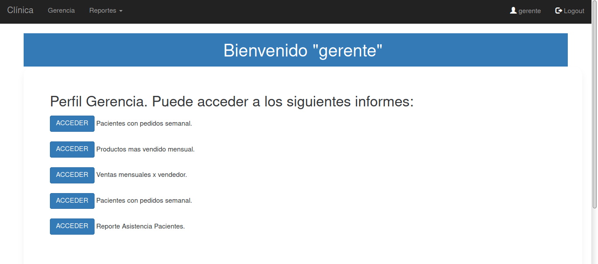
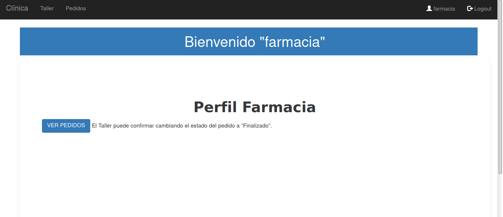

Sistema de gestión integrado que permite administrar una clínica privada. Informes automatizados.
Informes:
Informes para la toma de decisiones. El encargado de la administración puede acceder a los informes para evaluar el funcionamiento de la clínica.
Sistema de permisos y funciones específicas para garantizar el correcto funcionamiento.
Cada Perfil cuenta con funciones específicas.
Informes:
Gerencia El encargado de la administración puede acceder a los informes para evaluar el funcionamiento de la clínica.
Médicos. El usuario podrá administral el historial clínico de todos sus pacientes, de una manera ordenada y eficiente. Cuenta el acceso al informe de asistencia de los pacientes. Además puede visualizar los próximos turnos.
Secretarios. Cuenta con un sistema sencillo para el registro de los Pacientes. Puede asignar turnos y gestionarlos según conveniencia.
Ventas. El rol permite tomar pedidos para los pacientes, releva la información del pedido, y luego le asigna la órden para que el equipo en Farmacia se lo prepare al Paciente.Una vez que se genera el pedido queda en estado “Pendiente” hasta que Farmacia lo prepara.
Farmacia Pueden visualizar la lista de pedidos para poder armarlos y prepararlos para la entrega. Al realizarlo marcan el pedido como "Finalizado".
Disponible la versión on-line para que la pruebes, haciendo click en "Live demo". No necesitás registrarte, hay usuarios para que pruebes cada detalle.
Si querés conocer más visitá nuestro repositorio con el código dispoible. Descargálo y experimentá en tu entorno local.
Bienvenidas las sugerencias, preguntas, críticas. Contactáme directamente por mail: sebastian.davila.personal@gmail.com